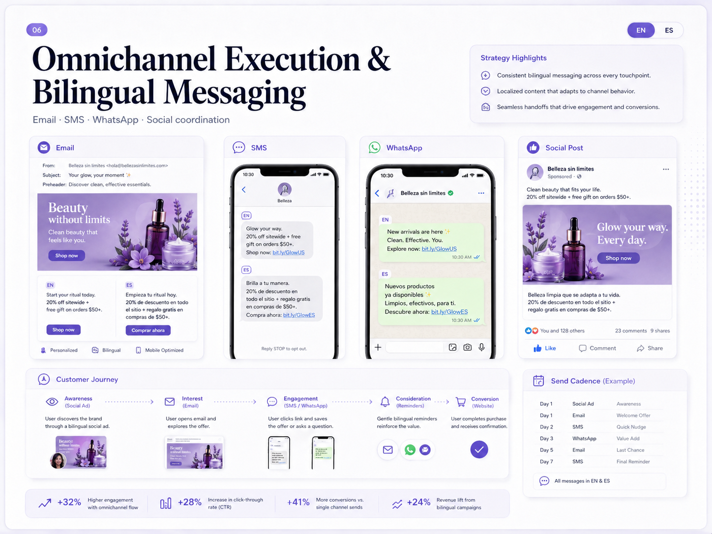
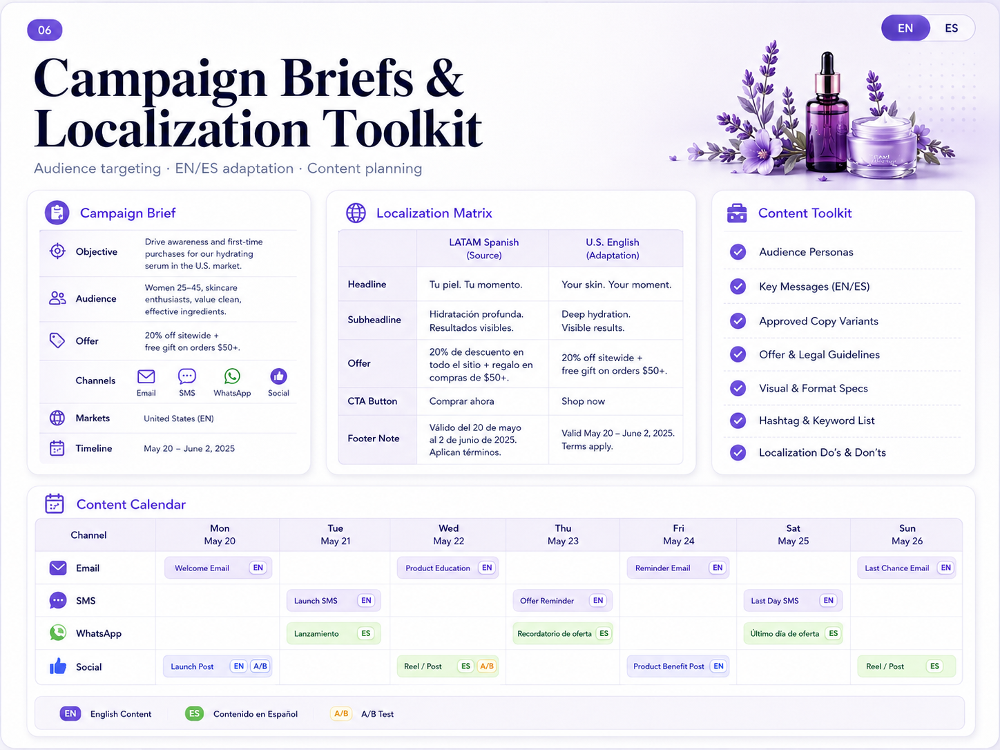
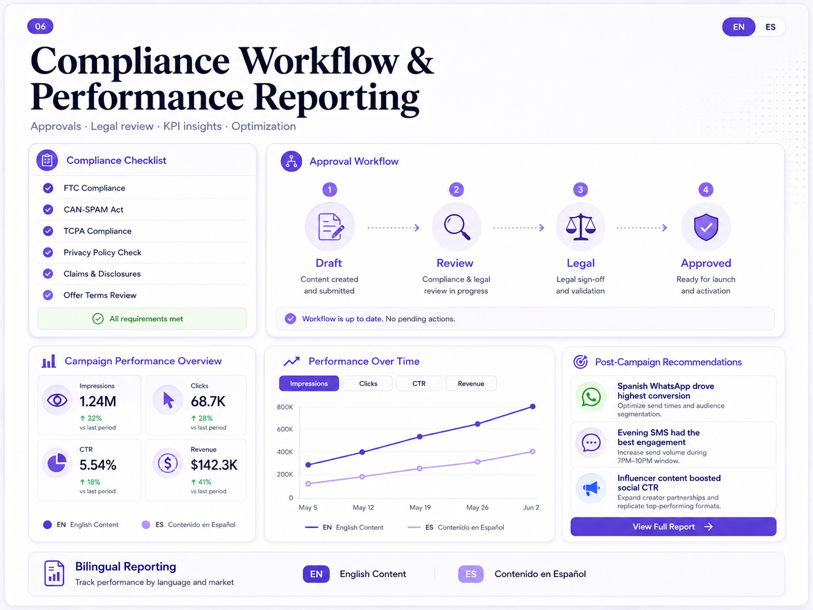

CASE STUDY / 06
Bilingual Campaign Operations
& Localization
A bilingual campaign operations system supporting U.S. market execution through EN/ES localization, omnichannel coordination, compliance-minded workflows, and performance reporting.

My role
I supported campaign localization, organized campaign materials, coordinated messaging across email, SMS, WhatsApp, and social channels, and contributed to review and reporting workflows.
Planning assets
for EN/ES execution.

A structured system for campaign briefs, content planning, audience alignment, and adapting LATAM Spanish messaging for U.S. English audiences.
Coordinated messaging
across touchpoints.
Coordinated bilingual messaging across email, SMS, WhatsApp, and social touchpoints throughout the customer journey.
Review steps
and reporting flow.

A simplified workflow showing compliance checkpoints, approvals, KPI reporting, and post-campaign recommendations.